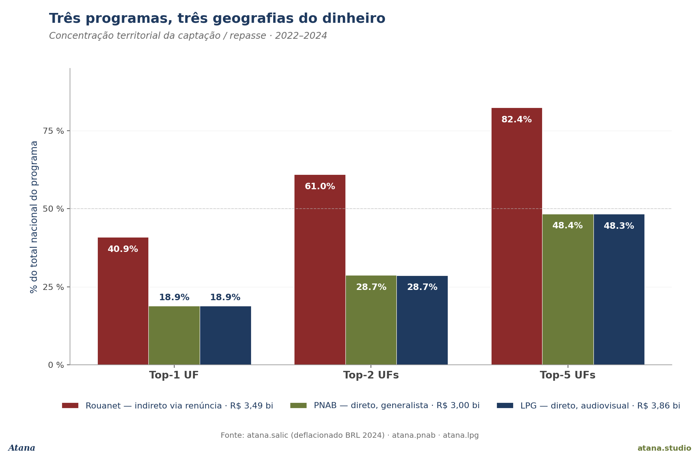
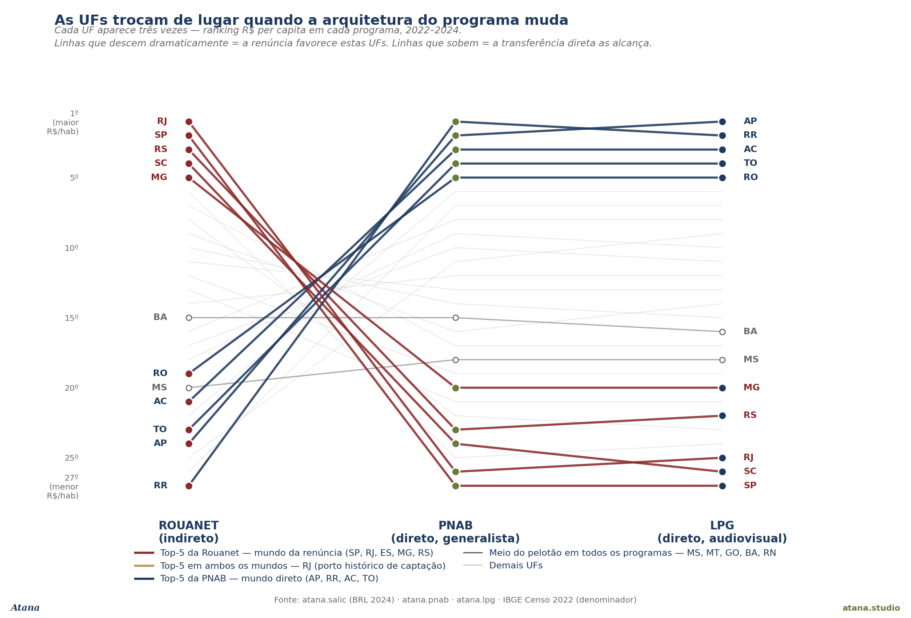

Signal
In 2022–2024, the Brazilian federal government moved R$ 10.35 billion in cultural fomento through three distinct programmes: Lei Rouanet (Law 8.313/91), Política Nacional Aldir Blanc (LC 195/2022, "PNAB"), and Lei Paulo Gustavo (LC 195/2022, "LPG"). The three totals are of the same order of magnitude — Rouanet captated R$ 3.49 bn, PNAB transferred R$ 3.00 bn, LPG transferred R$ 3.86 bn. But each programme's geography of money is a different geography.
Rouanet sent 40.9 % of everything it captated to a single state (São Paulo) and 82.4 % to the top five. PNAB and LPG each sent 18.9 % to the top receiving state and around 48 % to the top five. In the same country, in the same three-year window, two federal pipes distribute money about half as concentrated as the third. That 22-percentage-point gap doesn't come from programme intent or thematic priority — it comes from transfer architecture.
Rouanet operates through tax expenditure: the federal government forgoes IR revenue, and the private donor decides which project receives the money. The big tax-planning departments are in São Paulo and Rio de Janeiro. PNAB and LPG operate through direct federal transfer to each state or municipality, with allocation formulas that weight population and area. Brazil's population is spread across 26 states + the Federal District. The two architectures reach the territory in completely different ways.
Why this matters
There has been a long-running debate in Brazilian cultural policy about the regional concentration of fomento money. For decades, the only federal lever at scale was Rouanet — and for decades the critique was the same: the money stays in SP and RJ. The 2022 constitutional reforms (PNAB) and the 2022 emergency law (LPG) brought, for the first time in decades, a structural alternative to the indirect design. This Note stacks the three accounts side by side, normalises by population, and shows empirically that the architectural switch works as redistribution — not as rhetoric, but as a table.
Three immediate implications:
-
For the public debate: Brazilian federal cultural money changed geography in 2022–2024, but public perception still runs on the inertia of three decades of Rouanet. The mental image "the money stays in SP" correctly describes one of the three programmes and ignores the other two.
-
For the Ministry of Culture: the empirical evidence that the redesign works supports the case for continuing both programmes beyond their emergency phase. PNAB was designed as permanent policy (LC 195/2022 art. 1); LPG was emergency-only and was extended by subsequent legislation (Law 14.628/2023). There is a political window in 2026 to decide whether the design persists.
-
For the book: this is the cleanest distributive finding in the
atana-datacorpus so far. Methodological pluralism applied to a single policy question — three independent administrative sources, the same temporal window, three answers that only converge when the architecture is named.
What the data say (1) — national concentration

Figure 1 shows each programme's share going to the top-1, top-2 and top-5 states.
| Programme | Architecture | Top-1 state | Top-2 states | Top-5 states |
|---|---|---|---|---|
| Rouanet | Indirect via tax expenditure (since 1991) | 40.9 % | 61.0 % | 82.4 % |
| PNAB | Direct transfer to entities, general-purpose (since 2022) | 18.9 % | 28.7 % | 48.4 % |
| LPG | Direct transfer to entities, AV-specific (2022–2024) | 18.9 % | 28.7 % | 48.3 % |
Two observations:
-
PNAB and LPG have virtually identical distributions. Both send 18.9 % to the top state, 28.7 % to the top two, and ~48 % to the top five — even though PNAB is thematically general (culture as a whole) and LPG is AV-specific. The allocation formula is what produces the convergence, not the cultural theme. A direct-transfer design with population/territorial criteria produces the same geographic pattern regardless of the thematic axis.
-
The difference between the two designs is not gradual, it's structural. Rouanet is 2.2× more concentrated in the top state, and 1.7× more concentrated in the top five. There is no visible middle ground in the corpus — direct programmes behave like direct programmes, indirect programmes behave like indirect programmes, regardless of thematic flag.
What the data say (2) — who receives how much per capita

Figure 2 normalises by the 2022 IBGE Census population and shows federal cultural R$ per capita, summing the three programmes. Four readings:
-
RJ at the top (R$ 73.48/hab) — Rouanet remains the state's principal source, even in the post-PNAB+LPG world, because tax expenditure has historically preserved Rio's captação infrastructure.
-
AP, RR, AC, TO immediately behind (R$ 66–73/hab) — four states with virtually no Rouanet history (Rouanet/hab < R$ 1.50 over three years) reaching per-capita levels comparable to RJ through PNAB+LPG. To make it explicit: an inhabitant of Amapá has historically received virtually no Rouanet money (R$ 0.77/hab over three years), but received R$ 72/hab through the two direct transfers. This is a structural shift, not a fluctuation.
-
SP (R$ 61.32/hab) — remains high, but two facts stand out: (i) it is lower than the per capita of AP, even though SP captates R$ 1.4 bn in Rouanet against R$ 0.6 mn in AP — the absolute advantage dissolves once divided by SP's 44.4 million residents; (ii) the average São Paulo resident receives R$ 32.16 in Rouanet but only R$ 12.75 in PNAB and R$ 16.41 in LPG. The two direct-transfer programmes both pay SP below the national average per capita.
-
MS, MT, GO at the bottom (R$ 35–37/hab) — states with small Rouanet and PNAB+LPG below the median. The new architecture corrects the poles, not the centre of the Cerrado.
The R$/hab ratio between the top receiver (RJ R$ 73.48) and the bottom (MS R$ 35.15) is 2.1×. The same ratio computed only on Rouanet would be tens of times larger (see Figure 3).
What the data say (3) — states swap places when the design changes

Figure 3 shows, side by side, each state's position in the R$ per-capita ranking of each programme. Every line is a state, connected three times — once per programme. The eye reads the finding without reading a table: the red lines (top-5 of Rouanet) plunge dramatically from left to right; the navy-blue lines (top-5 of PNAB) climb just as sharply in the opposite direction. The two architectures literally invert who is on top.
Four concrete readings:
-
SP's free fall (#2 → #27). São Paulo is second only to Rio in R$/hab under Rouanet, and dead last (27th) in both direct-transfer programmes. The average São Paulo resident receives below the national mean in both PNAB and LPG. Leadership in absolute amounts doesn't survive population normalisation when the programme design doesn't favour it.
-
RR's equally sharp climb (#27 → #1/#2). Roraima moves from the last position under Rouanet to first or second under PNAB and LPG. AP, AC, TO follow the same pattern. The four states of the northern frontier and Amazon — historically outside Rouanet's reach — are the ones that gain the most per capita under direct transfer.
-
The RJ exception — the historic port that persists in both worlds. Rio is the only state that simultaneously sits in Rouanet's top-1 and keeps a relatively high position (though not top) under PNAB/LPG, carrying it to the top of the combined ranking. The exception has a name: RJ historically concentrates Rouanet's legal-tax and cultural-captation infrastructure (AV producers, institutional-relations departments), and that capital doesn't migrate when the design changes. RJ is the only Brazilian state where the indirect architecture deposits a surplus that the direct architecture alone would not replace.
-
The MS / MT / GO / BA / RN gap — where neither architecture reaches well. Five states from the Cerrado, central Northeast and southern interior appear as middle-of-the-pack (ranks 15–22) across all three programmes simultaneously. They are not favoured by tax expenditure; they are not among the largest beneficiaries of direct transfer. The new architecture corrects the extreme poles but does not close the middle gap. This is a policy warning: PNAB/LPG redistribution operates primarily over territories where Rouanet was zero; it does not multiply the per-capita pie of territories that already had a small but non-zero slice.
For a quantitative reinforcement of the switch: the R$/hab ratio between the top and bottom state is 80.8 × if computed on Rouanet alone, 2.4 × on PNAB, 2.5 × on LPG, and 2.1 × on the sum of all three. The drop from 80× to 2× is the quantitative version of the same switch that Figure 3 shows as crossing lines. It's not hyperbole — it's the ratio between two real numbers.
Independent cross-validation. IBGE SIIC table 3.15 (federal Cultural tax expenditure, Receita Federal source, 2023) places 77.8 % of federal cultural tax expenditure in the Southeast — confirming, from an entirely separate administrative source, the concentration our SALIC measurement reports as 61 % in SP+RJ. Two independent sources (SALIC microdata + Receita Federal aggregates) describe the same geography of tax expenditure.
Implications
The Note documents a clean distributive finding. Four immediate implications:
(i) For federal cultural budget design. The choice between indirect (Rouanet) and direct (PNAB/LPG) architecture is today the most relevant distributive lever in federal cultural policy. The Ministry has evidence that the redesign works — not just in intention, but in where the money lands.
(ii) For the debate over programme permanence. LPG was extended, PNAB was designed as permanent. There is a political window in 2026 to decide what continues. The Note provides empirical grounding for the defence: three years of operation by both programmes have redistributed federal cultural money to territories it had never reached before.
(iii) For the public narrative. The mental image "federal cultural money stays in SP and RJ" correctly describes one of the three programmes. For the other two, the opposite is true: the São Paulo resident receives below the national average, and the Amapá resident receives above the São Paulo resident. Public perception lags the data.
(iv) For the system of accounts. IBGE T3.1 (direct federal cultural spending, 2023) is R$ 856 mn/year — only 4.5 % of total public cultural spending. This is a structural underestimate of federal influence, because it excludes tax expenditure (Rouanet) and excludes PNAB/LPG transfers (which appear in T3.1 as state/municipal spending once received by the entity). The true scale of federal intervention in Brazilian cultural fomento is ≈ R$ 3.5 billion/year — four times what T3.1 reports directly — distributed across three programmes with three architectures. Any honest reading of the system needs to consider all three simultaneously.
(v) For the design of future versions of the programmes. Two specific observations that Figure 3 (the rank-swap chart) makes visible and that deserve legislator attention:
-
The RJ exception. Rio de Janeiro is the only Brazilian state appearing simultaneously at the top of both architectures — via Rouanet through historical AV-major captation and the legal-tax circuit; via PNAB/LPG through the population formula. RJ's combined per capita (R$ 73.48/hab) is the highest in the country. This means that even if Rouanet were formally dismantled tomorrow, RJ would continue to receive federal cultural money via PNAB/LPG at reasonable levels — but it would lose, alone, the historical AV-film captation port that no other programme replicates. The policy question is not "Rouanet yes or no" but "how to preserve the AV-captation infrastructure that developed in RJ if Rouanet is reformulated".
-
The middle gap (MS / MT / GO / BA / RN). Five states appear as mid-pack across all three programmes. They are not beneficiaries of the historical tax-expenditure privilege, and the PNAB/LPG formula does not place them among the principal beneficiaries either. This indicates that PNAB/LPG redistribution operates primarily over territories where Rouanet was zero — not over territories where Rouanet was small but non-zero. An additional equity criterion in future versions of these programmes would need to address this gap in the country's middle.
Caveats (W1–W5)
| # | Alert |
|---|---|
| W1 | SALIC coverage ≈ 46 % of the Rouanet universe (per the documented source caveat). The IBGE T3.11 cross-validation (Rouanet 2022 captation nominal R$ 2.12 bn vs our deflated R$ 1.43 bn BRL-2024) is consistent with that partial coverage. Direction preserved, magnitude may underreport. |
| W2 | PNAB and LPG are transfer programmes; money received by the entity then enters state/municipal execution, and part of it goes to projects via subsequent calls. This Note measures the transfer (money arriving in the territory), not the final project-level application. |
| W3 | Short window (3 years). PNAB and LPG operate from 2022; Rouanet from 1991. Comparison is only possible in the co-existence window. LPG is by design emergency; its redistributive architecture may or may not persist beyond 2024. |
| W4 | Census 2022 final populations. IBGE official 2022 release (ResIBGE, June 2023) is used as denominator. Marginal differences with post-2022 estimates do not affect the ranking. |
| W5 | Does not include direct federal cultural budget (IBGE T3.1, R$ 856 mn/year in 2023). That budget is small relative to the three federal accounts analysed here, but it exists and has its own distribution. A complete analysis of "federal cultural money per capita" would need to sum all four sources. |
Sources
| Source | atana schema | Table / module | Window |
|---|---|---|---|
| MinC SALIC API (Lei Rouanet) | atana.salic |
projetos_v2 (26,203 PRONACs) |
2022–2024 |
| MinC PNAB execution | atana.pnab |
execucao_financeira (5,425 entities) |
2022–2024 |
| MinC LPG execution | atana.lpg |
execucao_financeira (10,984 transfers) |
2022–2024 |
| IBGE Demographic Census | (denominator, outside atana) | official 27-state table | 2022 |
| IBGE SIIC Chapter 3 (cross-validation) | (outside atana, direct xlsx read) | T3.11 + T3.15 + T3.1 | 2013–2023 |
Cross-walk to UNESCO FCS 2025's 14 cultural domains in canonical.domain_crosswalk (atana.pnab → Multiple transversal; atana.lpg → Audiovisual cultural; atana.salic → multi-domain).
How to cite
Roque da Silva Junior, J. (2026). Three programmes, three geographies: Rouanet × PNAB × LPG, 2022–2024. Atana Note #21. atana.studio/notes/21/.
Planned extensions
- Análise 26 candidate (Vol. 1): extended version with per-capita Gini per programme, decomposition by major region, Rouanet annual series 2019–2024 (Período Lula), and authorial probabilities for what happens in 2025 if LPG is not extended again.
- Vol. 2 of the SALIC paper: federalism-of-culture section — Brazil vs other LATAM countries with direct cultural transfers (Argentina FONCA, Mexico FONCA — Phase 7 scope of
atana-data). - Cross with TCU 1709/2025 (PNAB audit): the audit assesses governance and execution of the same programme that this Note describes geographically. A third lens — accountability vs distribution.